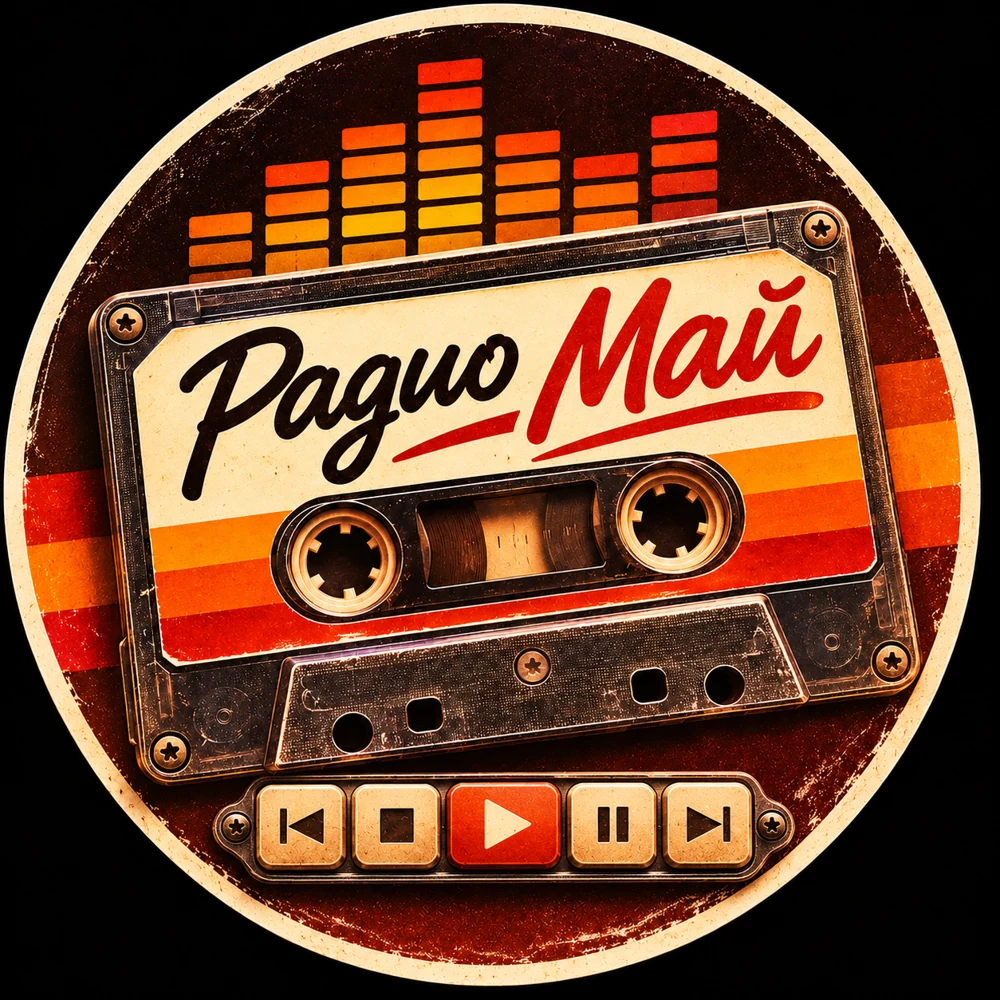

◉ Радио Май
ТВОЯ МУЗЫКА. ТВОЙ ЭФИР.
i

Сейчас выбрано
Выбери радиостанцию
22 станции в одной кассете
READY
|◀
■
▶
Ⅱ
▶|
Выбери станцию из списка. Прямые эфиры подключаются после проверки потоков.
◉ Станции
♡ Избранное
♫ Жанры